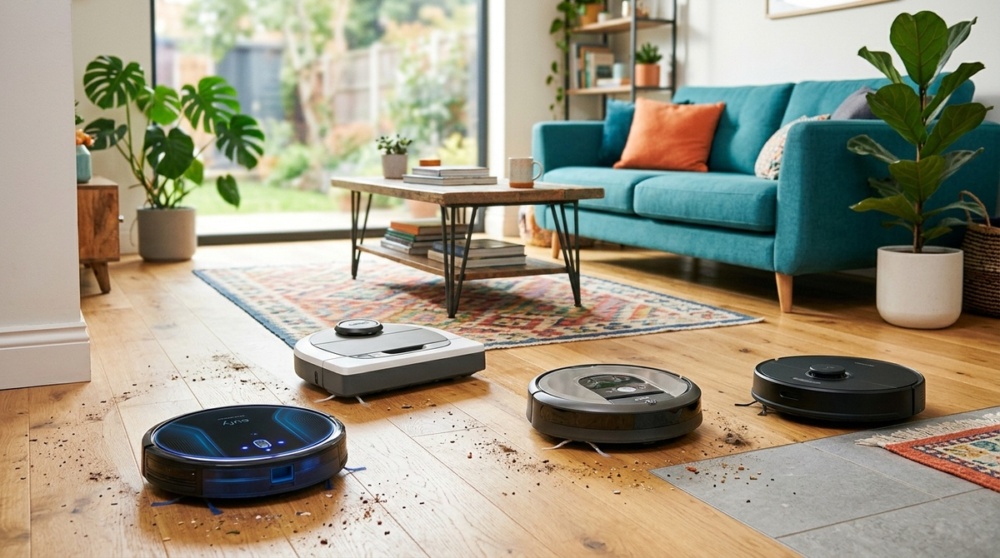
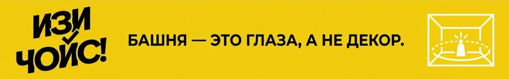
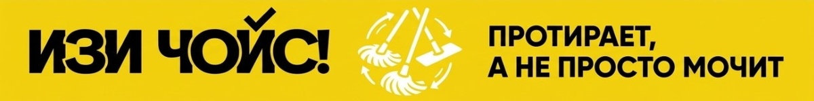
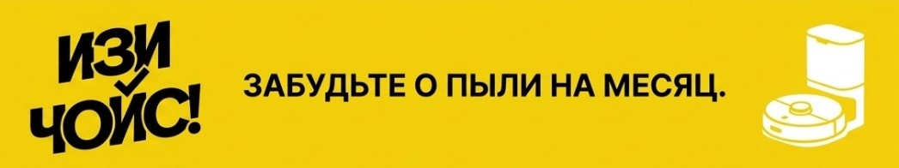
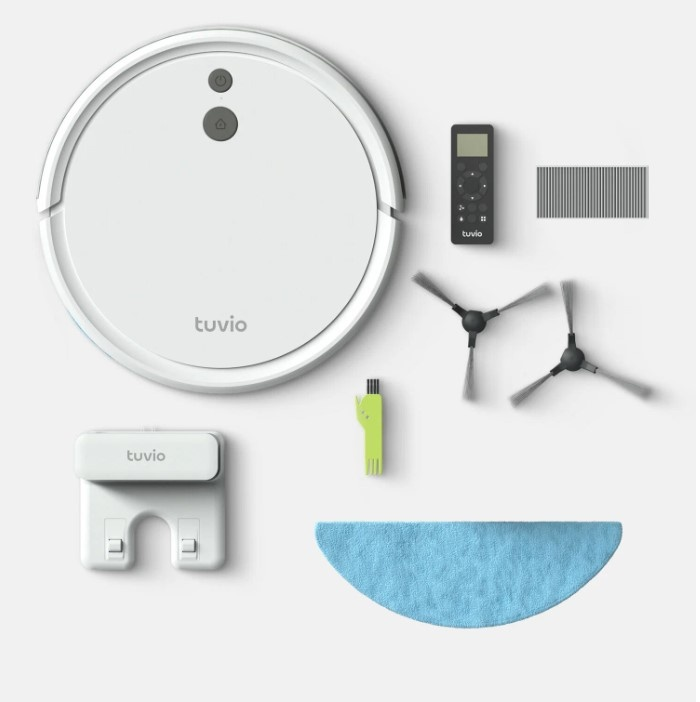
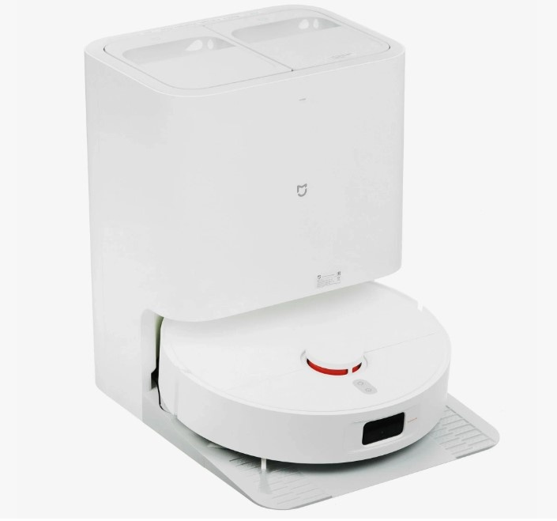
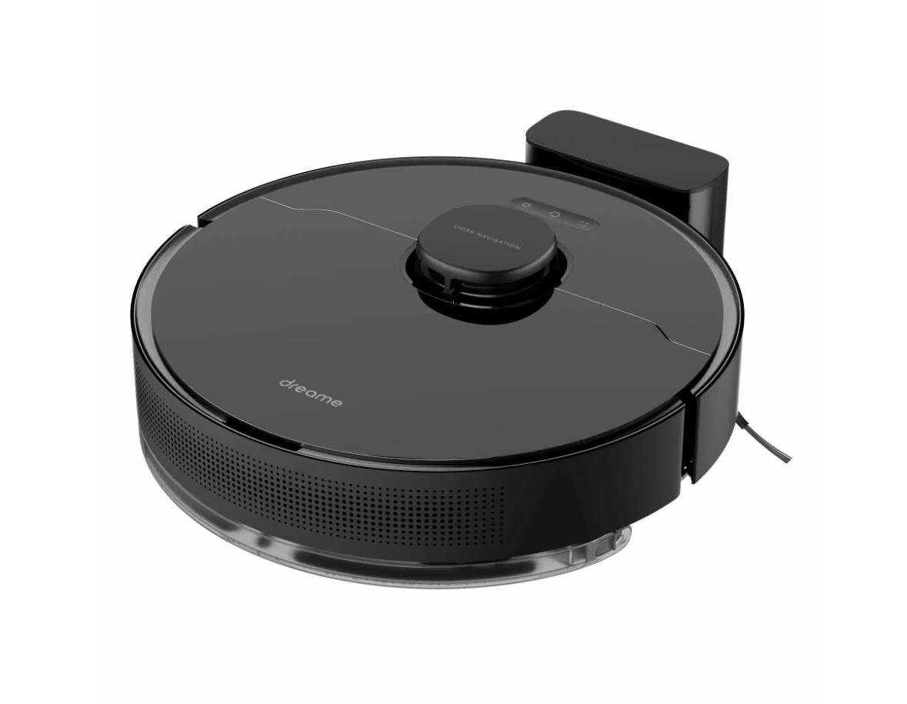
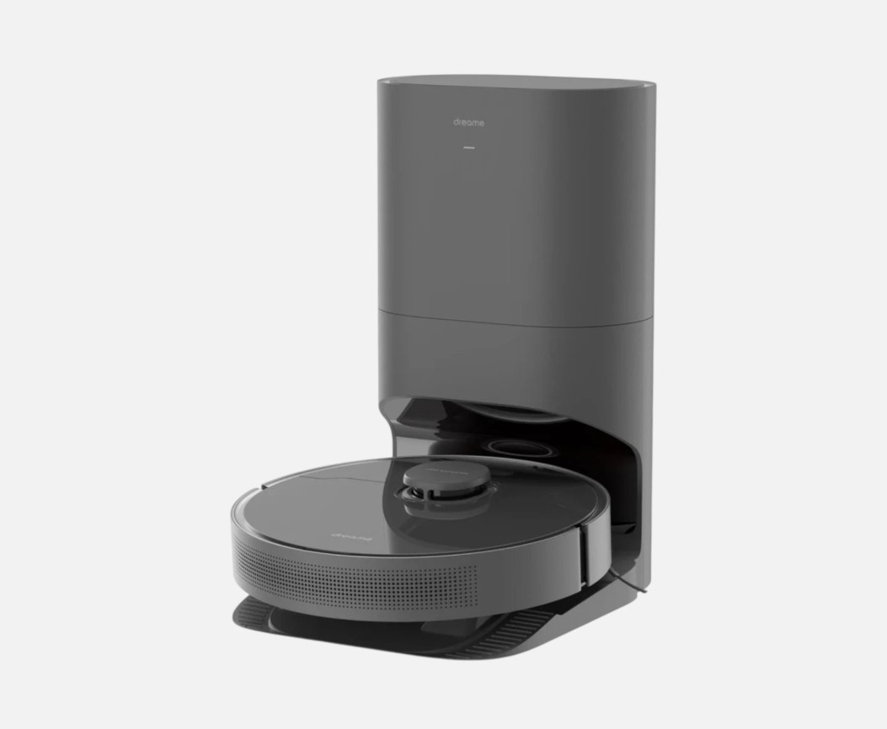
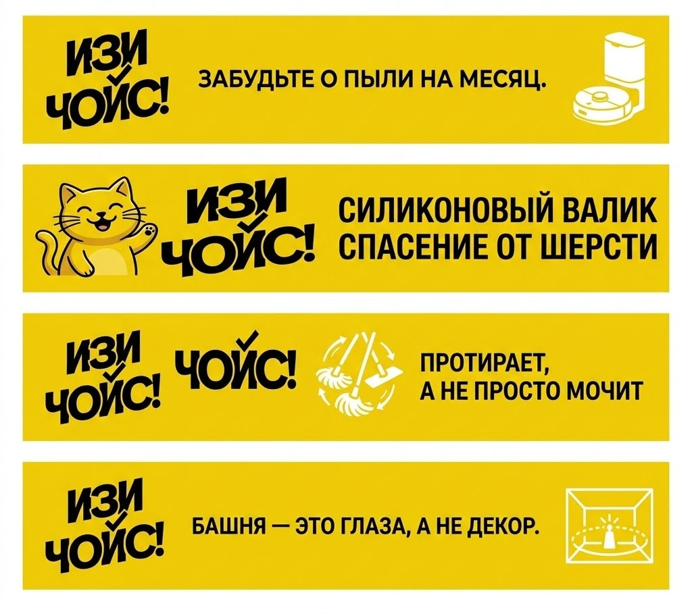

Робот-пылесос 2026: Как не купить дорогую игрушку и получить чистоту

Роботы-пылесосы плотно вошли в нашу жизнь. Кажется, чего проще: зашёл на маркетплейс, выбрал симпатичную круглую таблетку, нажал кнопку — и дома чисто. Но на практике тысячи людей сталкиваются с разочарованием. Их робот глупо бьётся о ножки стульев, размазывает грязь по паркету тонюсенькой салфеткой и требует чистки щётки после каждой уборки, превращаясь из помощника в дорогую и капризную игрушку.
В 2026 году рынок перенасыщен моделями. Чтобы ваш робот действительно убирал, а не создавал видимость работы, нужно смотреть на 4 критически важных нюанса.
Нюанс №1: Навигация (Лидар vs Камера vs Бампер)
Самые дешёвые роботы до сих пор ориентируются «по бамперу» — они едут прямо, пока во что-то не врежутся, а потом хаотично разворачиваются. Это прошлый век. Модели с камерами неплохи, но пасуют в полной темноте. Золотой стандарт — это Лидар (Lidar), башенка на крыше прибора. Он лазером сканирует комнату за секунды и строит идеальную карту даже в абсолютной темноте.

ИЗИ-совет: Забудьте про роботов без Лидара, если у вас в квартире больше одной комнаты. Только Лидар гарантирует, что робот не заблудится и уберёт каждый метр площади.
Нюанс №2: Мощность всасывания и влажная уборка
Обычная статичная тряпочка, которую робот просто таскает за собой, способна лишь собрать лёгкую пыль. Если вам нужна реальная влажная уборка, ищите модели с виброшваброй (которая совершает тысячи движений в минуту) или с вращающимися круглыми дисками-мопами. Они буквально оттирают присохшие пятна с пола.

ИЗИ-совет: Обращайте внимание на силу всасывания (Паскали). Для гладких полов достаточно 3000–4000 Па, но если дома есть ковры, планка поднимается до 5000–7000 Па, чтобы вытянуть пыль из глубины ворса.
Нюанс №3: Силиконовые валики против волос
Классические щётки с ворсом — это кошмар для владельцев домашних животных или длинных волос. За одну уборку щетка превращается в шерстяной кокон, который приходится долго и уныло срезать ножом.
ИЗИ-совет: Замените ворс на сплошной силиконовый или резиновый валик. Волосы на него практически не наматываются, а сразу пролетают в мусоросборник. Кот скажет вам спасибо (или просто продолжит игнорировать).
Нюанс №4: Станция самоочистки (лень — двигатель прогресса)
Маленький контейнер внутри самого робота (на 300-400 мл) приходится вытряхивать вручную чуть ли не после каждой уборки. Станция самоочистки решает эту проблему кардинально: робот приезжает на базу, и она мощным потоком высасывает весь мусор в большой мешок внутри док-станции.

ИЗИ-совет: Станция самоочистки превращает робота из полуавтоматического прибора в полностью автономный гаджет. Вы можете вообще не вспоминать об уборке от 30 до 60 дней.
Выбираем модель: от «Бюджетных отличников» до «Флагманов»
1. Бюджетный сегмент (до 20 000 руб.)
Рабочие лошадки с отличной навигацией для базовой автоматизации дома.

Надёжная база: Лидар, базовая влажная уборка и простое обслуживание.- Xiaomi Robot Vacuum S10: Абсолютная классика. Честный Лидар, отличная сухая уборка, построение карт и работа через удобное приложение Mi Home. Прекрасный стартовый вариант.
- Tuvio Lidar Robot: Очень удачный и доступный бренд от Яндекса. Минимум маркетинга, максимум пользы — отлично ориентируется в пространстве и держит заряд.
2. Средний сегмент — «Золотая середина» (30 000 – 50 000 руб.)
Модели, которые предлагают автономность благодаря базам самоочистки и продвинутым швабрам.



- Dreame D10 Plus: Любимчик пользователей. Поставляется сразу со станцией самоочистки. Засасывает мусор на базе так, что мешка хватает на полтора месяца автономной работы.
- Roborock Q7 Max: Настоящий неубиваемый киборг с мощным всасыванием и резиновым валиком, который идеально соскребает грязь и не забивается волосами.
- Xiaomi Robot Vacuum X10: Отбалансированная модель со станцией очистки мусора, высокой мощностью и умным обходом мелких препятствий на полу.
3. Премиум сегмент — «Флагманы» (80 000 руб. +)
Полный «all inclusive». Станции сами вытряхивают мусор, стирают тряпки горячей водой и сушат их, чтобы не было запаха.

Флагманские комбайны: Максимальная автономность, стирка мопов и распознавание кабелей на полу.- Dreame L20 Ultra / L30: Топовые комбайны. Умеют выдвигать швабру вплотную к плинтусу, снимать диски перед заездом на ковры и распознавать десятки типов предметов на полу с помощью ИИ и камеры.
- Roborock S8 Pro Ultra: Флагман с двойными резиновыми валиками (эффективность выше в два раза) и ультимативной станцией, которая делает абсолютно всё сама.
Резюме: Так какой же выбрать?
Чтобы окончательно разложить всё по полочкам, вот итоговая шпаргалка «ИЗИ ЧОЙС!».
Экспертный вывод:
- Если бюджет ограничен: Берите Xiaomi S10 или Tuvio. Вы получите отличную сухую уборку и идеальную навигацию без переплат.
- Если хотите забыть про чистку на месяц: Ваш выбор — Dreame D10 Plus или Xiaomi X10 со станцией самоочистки.
- Если дома много шерсти и волос: Ищите Roborock Q7 Max или флагманы с силиконовыми валиками.
- Если нужен максимум технологий и чистые ковры: Берите Dreame L20 Ultra или Roborock S8 Pro Ultra. Они сами разберутся со всеми типами покрытий.
Помните: техника должна работать на вас, а не вы на неё. Делайте свой ИЗИ ЧОЙС! ✨
Сохраняй шпаргалку, чтобы не забыть о важном при выборе робота-пылесоса.
